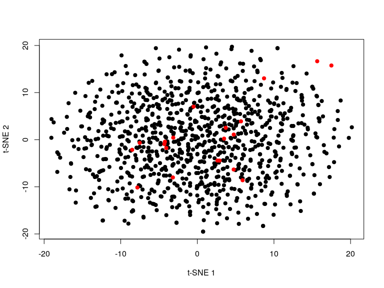

R binding for openTSNE using basilisk.
Example usage
Basic usage of the function returns a matrix of t-SNE coordinates.
library("snifter")
set.seed(42)
m <- matrix(rnorm(20000), ncol = 20)
snifter <- fitsne(m[-(1:2), ], random_state = 42L)
plot(snifter, pch = 19, xlab = "t-SNE 1", ylab = "t-SNE 2")
We can also project new points into an existing embedding.
n <- 20
snifter <- fitsne(m[-(1:n), ], random_state = 42L)
plot(snifter, pch = 19, col = "black",
xlab = "t-SNE 1", ylab = "t-SNE 2")
new <- project(snifter, m[1:n, ], old = m[-c(1:n), ])
points(new, pch = 19, col = "red")